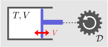
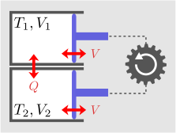
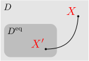
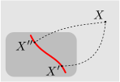

エントロピーは、一般の平衡状態に対しても存在するのではないか
エントロピーを、2つの容器がある場合に拡張したい。前章でみたように、1つの断熱容器に対してエントロピーと呼ばれる量が定義でき、可逆な場合のみエントロピーが保存し、それ以外では増大するのというものであった。このように、エントロピーは、平衡状態間の可逆性という（これまで扱ってきた分野では出てこなかった）概念を定量的に扱うことができ、非常に興味深い。複数の容器がある場合であっても、熱的な現象は不可逆である。例えば、異なる温度の物体同士を熱接触させる場合である。接触後、両者の温度は等しくなり、その逆は決して生じない。よって、このような系に対しても、エントロピーが定義できると期待できる。
エントロピーを求めるには、可逆な操作を全て見つければよい
可逆性の議論は、一般に可能だと思われるが、まずは、第2章で扱ったような、熱接触可能な2つの容器を考える。平衡状態を決めるには、各々の容器の温度
および体積
の4つを確定させる必要があるので、状態空間
の次元は
である。よって、
種類の可逆操作（前章のように微分方程式になるはず）を見つけることができれば、その可逆操作によって
次元の等エントロピー面が定義できることになる。
ただし、その微分方程式から等エントロピー面が実際に定義できるためには、フロベニウスの定理から得られる可積分条件（力学編の15.3節）を満たさなければならない。よって、そこから新しい関係式が出てくることが期待される。可積分条件を満たすことを要請すれば、後は、各々の等エントロピー面に数字を振れば、エントロピーが定量化できる。これらを各々の節に分けて議論する：
容器系の可逆操作エントロピーの存在条件エントロピーの定量化
エントロピーを求めて何の役に立つのかと思うかもしれない。実際、ある過程が可逆か不可逆かを判定したいという場面はあまりなさそうである。しかし、エントロピーの有効性として、2つ考えられる。1つ目は、熱効率である。例えば冷房によって部屋を冷やすとき、外部を変化させずに冷やすことはプランクの原理に反するので不可能である。従って、部屋の熱を外に放出する必要があるわけだが、それをなるべく小さくするにはどうすればよいかという問題である。（次章で扱うが、準静的な空調装置を用いた時に効率が最高になる。）このように、ある操作が可能かどうかの判定に使えそうである。
2つ目は、平衡条件の導出である。平衡状態ではそれ以上の変化が起きなくなるので、最も不可逆な状態になっている、即ち、（エネルギー保存則などの制約条件の下で）エントロピーが最大となる点になっているはずである。第1章と第2章で扱った熱接触の場合、平衡条件は簡単に求めることができたので、エントロピーを考える必要はない。しかし、例えば、水と氷が共存していて、その割合が終状態でどうなるのかを知りたい場合、終状態に対してどのような平衡条件を課せばよいのか自明ではない。そのような場合であっても、エントロピーが求まれば、極値条件を課すことによって、平衡状態が計算できるはずである。これについては第6章以降で扱う。以上のように、エントロピーは、単に理論的な興味というだけではないのである。
4.12容器系の可逆操作
エントロピー
を求めるためには、まず、
で定義される等エントロピー面を表す条件式が必要である。その後、各々の等エントロピー面に数字を割り振れば
が決まる（数字の振り方には任意性がある）。等エントロピー面の定義は、その面上では可逆に行き来できることである。よって、可逆操作をすべて見つければ等エントロピー面が決まる。今考えている2つの変形可能な容器がある系の場合、冒頭でも述べた通り、
つの可逆操作を見つける必要がある。
この節では、その3つの可逆操作が、「分離した状態の各容器の準静変形」と「接触させた状態での共等温変形」であることを述べる。
なお、考えている容器は基本的には断熱容器だが、容器同士を熱的に接触させることができるとする（離すこともできる）。容器同士が接触している時には互いに熱を交換でき、離れている時は断熱容器として振る舞うとする。
断熱容器の準静変形は可逆：性質()
前章で述べた様に、1つの断熱容器にはエントロピーが定義できて、準静的な変形で保存する（変形時の摩擦は無視できるとしている）。そして、準静的な変形サイクルで容器の状態は元に戻るのであった。よって
つの断熱容器の準静変形は可逆である
といえそうである。しかし、準静変形を実際に行うためには、ピストンを動かすための装置
を容器外に用意する必要がある（状態空間の
とは別物）。可逆であるためには、この
の状態についても元に戻せ無ければならないと考えるのが自然である。もちろん、
の取り方にも依存することになるが、そこにはあまり興味がないので、
も含めて元に戻るようにできれば（そのような
が存在すれば）、可逆であるとみなすことにする。

性質()を示すために、右図のような系を考える。これは、断熱容器（同図左）と、変形を起こすための力学的な装置
（同図右）からなる。容器の変形をピストンで代表するように、
のことを弾み車で代表する。 弾み車（フライホイール）とは、重い円盤を回転させたものである（摩擦による減衰は無視できるとする）。その運動エネルギーを使って様々な操作を行うことができる。弾み車とピストンをつないだり切ったりすることで、ピストンを操作できるわけである。この際、ピストン側から、エネルギーを受け取ることもできる。
この孤立系内で、何らかの操作を行った後、容器と
の両方の状態を元に戻せれば、その操作は可逆である。エネルギーに着目すると、容器側の状態が元に戻れば、容器のエネルギー
も元に戻る。すると、全エネルギーの保存則により、
のエネルギー
も元に戻ることになる。
の状態を決めるのは、回転速度、即ち、
だけである。よって、弾み車の状態も元に戻る。結局、断熱容器の状態が元に戻れば、系全体の状態も元に戻ることになる。
以上により、ピストンの先には弾み車のような理想的な力学装置が存在しているのだと約束すれば、可逆性の判定をするには、断熱容器の状態が元に戻るかどうだけを考えれば十分である。そう考えれば、性質()が成り立つとしてよい。性質()を主張するとき、その背後には、弾み車のような理想的な装置を仮定しているのである。（最初から断熱容器だけに着目して可逆性を定義する流儀もある。）
全状態空間 上の可逆操作：分離準静変形()
さて、もともと考えていたのは2つの容器がある場合である。まず、容器同士が熱接触せずに分離している状態を考える。この場合、2つの断熱容器があるだけなので、各々の容器の準静変形は可逆である。この時、エネルギーの収支から
が成り立つ。
エネルギーの変化
ではなく温度の変化
で表すには、エネルギー関数
の微分
を左辺第1項に代入すればよい：
容器が分離した状態での準静変形は、この微分方程式を満たす。この操作を分離準静変形と呼ぶことにする。
これだけだと可逆操作は2種類しかない（自由に動かせるのは、
の一方、および
の一方の2つのみ）。状態空間
は4次元なので、
上に3次元の等エントロピー面を定義するには、式()を1本にしなければならない（条件が
つになれば、それを満たす断熱操作は
種類になるということである）。現状だと、それぞれの容器に対して、エントロピー
が定義できて
を同時に満たすような操作が可逆であることまでしか言えていない（
という1つの式にしたい）。
等温状態空間 上の可逆操作：共等温変形()

可逆操作はほかにもあるはずである。右図のように、容器同士を熱的に接触させたまま、一方または両方の容器を準静変形することを考える。2容器を合わせた系全体は１つの断熱容器なのだから、その準静変形は可逆となるはずである。これを共等温変形と呼ぶことにする（一般的な用語ではない）。すなわち：
共等温変形は可逆である
この操作では、両方の容器の温度が常に一致した状態が保たれることになるので、共等温変形が定義できるのは、全状態空間
に対して
という条件を課した等温状態空間
：
においてのみである。一方、分離準静変形()は、
上で定義できる。
共等温変形による微小変化を、式()の様に微分方程式で表しておく。要は、
から
を決める式があればよい。これを求めるには、共等温変形での全エネルギー
の変化
の中辺に、式()をそれぞれ代入すればよい：
これは確かに、
から
を決める式になっている。
等温状態空間
上で等エントロピー面が決まるためには、条件式が1つだけになればよい。実際、式()は既にそうなっている。よって、
上の可逆操作はこれ以上ない。一方で、
上の可逆操作は、分離準静変形()から作ることもできる。これは単に、始状態として等温状態を取り、その後の変形
を、
となるように調整したものである。しかしこれは、式()に既に含まれる。実際、式()を辺々足し合わせれば式()になる。よって、
上の可逆操作は式()だけで十分である。
でエントロピーが存在すれば、 全体でもエントロピーが存在する
さて、これまでのところ、状態空間
全体で成り立つ可逆過程では式()が成り立ち、等温状態に限定した空間
上では式()が成り立つのであった。可逆操作はこれで十分だろうか。少なくとも
上では、1つの条件式()の形で書けているので、数は十分である。

問題はそれ以外の状態である。
上にない平衡状態
であっても、分離準静変形()によって両方の容器の温度を揃えることにより、
上の平衡状態
に移動させることができる（右図）。
と
は、準静変形で結ばれているので同じ、エントロピーを持つ。よって、
上でエントロピーが定義できれば、それ以外の平衡状態のエントロピーも決まりそうである。

ただし、1つ矛盾を生じる可能性がある。
から可逆的に到達できる
上の平衡状態は、
以外にも無数に存在するわけだが（
とおく）、もしも
と
が同じエントロピーを持たなければ矛盾が生じてしまう。しかしこのような心配は無用である。上述のように、共等温変形()には分離準静変形も含まれるので、
上の共等温変形によっても
から
に移行することができる（右図の赤線）。従って、
と
は必ず同じエントロピーを持つ。
結局、
上だけでエントロピーが定義できれば、状態空間全体でもエントロピーが定義できるわけである。
4.2エントロピーの存在条件
等温状態空間
でエントロピーが存在すればよいのだが、冒頭で述べた様に、式()は可積分（
の形に変形可能）であるとは限らない。力学編の第15章で述べた様に、可積分であるためには、フロベニウスの定理から課される条件を満たさなければならない。
この節では、この条件式である熱力学的状態方程式()を書下し、それが温度の定量化も与えることを見る。
エントロピーの存在条件：式()
3次元空間中に1つの制約条件がある場合の可積分条件は、以下の【4.2-注1】の式()で与えられる。これと、共等温変形()を見比べると
と置き換えればよい。実際に式()を計算すると
となる。容器1に関する量を左辺に、容器2に関する量を右辺にまとめることができて、以下のようになる：
この式が成り立つことを実験的に示せば、エントロピーが存在することになる。そして実際に、成り立つことが知られている。
ところでこの式()は、任意の2つの容器の組に対して成り立つので、容器の内容物に依らないことになる。よって両辺は、温度
のみに依存することになる。これを
と書くことにする：
これは、理想気体が入った容器の場合に
が
のみの関数
になるという、ボイルの法則の一般化となっている（その関数形が
に比例するように定義した温度目盛のことを、理想気体温度といったのであった）。ボイルの法則と違って、式()は、実在のあらゆる物質で成り立つ。
【4.2-注1】3次元のフロベニウスの定理
3次元空間上の制約条件が
と表されているとする（ベクトル
は至る所全微分可能）。この制約条件が可積分、即ち、ある関数
の全微分：
で表せるための、必要十分条件は以下である：
証明
力学編の第15章で、既に（より一般的に）証明した。
エントロピーの存在条件と熱力学温度：熱力学的状態方程式()
では、
はどのような関数形なのだろうか。ところでこの章では、温度
の目盛りとしてどのようなものを用いるかという情報を、全く使用せずに議論してきた。従って、逆に、
となるように温度
の目盛りを定義してもよい：
このように定義した温度を、熱力学温度という。なぜ
という関数形を選ぶかというと、第1章で導入した理想気体温度と一致するからである（以下の【4.2-注2】参照）。
この式()を、熱力学的状態方程式という。エントロピーの存在条件であると同時に、熱力学温度の定義でもあるという、非常に重要な式である。エントロピーが存在するかどうかを判定するには、式()の代わりにこの式()を用いてもよい。なお、特筆すべきことに、熱力学的状態方程式()を用いると、測定しづらい量である
の値が、状態方程式
から決まる（そのためこの式をエネルギー方程式と呼ぶことがある）。
この式()で定義された温度目盛を熱力学温度というが、前述のとおり理想気体温度に一致するので区別する必要はない。この定義の重要性は、実験的にいくらでも精度よく決めることができる点にある。理想気体による温度目盛の定義では、理想気体自体（あるいはそれにいくらでも近づけられるような気体）が存在しないため、実験的に精密に目盛を決めることができない。しかし、式()は実在の任意の気体で成り立つので、（原理的には）実験的にいくらでもよい精度で目盛を決めることができる。熱力学温度に一致するように温度計の目盛りを調整するには、以下の【4.2-注3】のようにすればよい。よって、理想気体温度という近似的な目盛りは、もはや不要になったわけである。温度を理論的に定量化したいという課題が、エントロピーの存在によって解決したのである。
【4.2-注2】熱力学温度 と理想気体温度 は一致する
熱力学温度
と理想気体温度
は、一致する。
証明
理想気体では、状態方程式
およびジュールの法則
（第2章）が成り立つ。熱力学的状態方程式()の右辺にこれらを代入すると、
が
の関数であることに注意して
となる。この式を書き換えると以下を得る：（下式の微分を展開すれば上式に一致する）
この解は、
と書ける（
は定数）。よって、比例関係にある。後は、適当な基準点（例えば1気圧での氷の融点）で
とすれば、
となり、両者は一致する：
なお、理想気体温度は精密に測定できるものではないので、「一致する」という言い方は本当はあまりよくない（実験的に検証できない）。実際には、理想気体に近い気体を使って求めた近似的な理想気体温度目盛は、熱力学温度目盛と近似的に一致する、という程度の意味である。
【4.2-注3】熱力学温度による温度計の調整
熱力学温度()を満たすように温度計の目盛りを調整したい。式()を直接使うことを考える（実用的かどうかは別として）。
まず、基準となる温度
を決めておく（例えば、1気圧での氷の融点を
とする）。その温度
の状態から、体積一定のままでエネルギーをわずかに変化させる。その時の圧力変化は
で与えられる。これを変形することにより、温度の変化
は、以下のように求まる：
熱力学的状態方程式：
最後の式は測定可能な量である（
の測定については第2章の2.1節で述べた）。
以上により、
が実験的に決まるので、この時の温度計の目盛りに
を刻む。これを繰り返していけば、任意の温度での温度計の目盛りが決まる（
を小さくしていけばいくらでも精密に決められる）。
4.3エントロピーの定量化
エントロピーの存在条件が熱力学的状態方程式()であることは分かったが、これは、等エントロピー面が定義できるというだけであって、各々の面にどのようなエントロピー値を割り当てるか（＝どのように定量化するか）には任意性が残っている。
エントロピー関数
は、加法的になっているのが好ましい。即ち
のように、全体のエントロピーが、各々の容器のエントロピーの和になるようにしたい。そうすれば、容器ごとにエントロピーを求めておくだけで、全体のエントロピーが単純な和によって計算できる。そうなっていない場合は、容器の組み合わせごとにエントロピーを計算し直すことになり不便である。
この節では、エントロピーを式()のように定量することができ、それは、加法性（＝全体のエントロピーが各容器のエントロピーの和となる）を持つ唯一の選択肢であることを示す。
積分因子 の条件式：式()、式()
加法的なエントロピー()を定義したい。まず、1つの容器に着目すると、可逆操作は式()より
である（容器を区別する添え字は省略した）。エントロピー
を用いると、この式が
と等価になるのだから、積分因子を
として
となる。
エントロピーが加法的になるように
をうまく決定したい。
に対する条件式として、まず、
が存在すること、即ち、式()の可積分条件（偏微分の可換性）：
が成り立たなければならない。加えて、等温状態空間での可逆操作()が
と等価になることも、もちろん必要である（
）。この2つの条件を満たしていればよい。
は温度の逆数：式()
まず、式()より、
の時、それぞれの容器の積分因子
は等しくなることが分かる：
（式()にエントロピーの微分()を代入した時に、共等温変形()が成り立つためには、積分因子が括り出せなければならない。）よって、積分因子は容器の種類や体積によらないので、温度
だけの関数ということになる：
。これを使って、式()の微分を実行して、
に関する量を左辺に集めると
熱力学的状態方程式
となる。従って、この解として以下：
を取れば、式()と式()を満たし、エントロピーが加法的になる。（
には定数倍する自由度があるが特に意味はない。）
加法性を持つエントロピーの定義：式()
以上により、エントロピーを加法的にすることができる。実際、式()に積分因子()を適用すればよい：
あるいは、熱力学的状態方程式()を右辺第2項に用いると簡単になる：
（従って、測定により、熱容量
と状態方程式
を決めれば、エントロピーが求められる。）
この微分方程式()から求めた
を用いて、その和として全エントロピー()が定義できるわけである。逆に、このように加法性を持つようなエントロピーは、これ以外に存在しない（定数倍と原点位置の自由度を除いて）。従って、これは、エントロピーの最も自然な定量化であるといえそうである。また、3つ以上の容器がある場合にも自然に拡張できる。